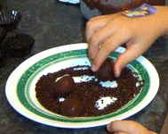

Trufas de chocolate
Trufas de chocolate
-
Ingredientes:
- 100 g de nata líquida
- 150 g de chocolate postres
- 150 g de chocolate con leche
- 25 g de brandy o whisky
- 1 paquete de fideos de chocolate
- capsulitas de papel
Preparación:
Trocea el chocolate. Calienta la nata y, antes de que hierva, añade los trozos de chocolate. Remueve la mezcla hasta que quede todo bien fundido.
Añade el licor y remueve hasta que todo quede bien mezclado. Retira la pasta y ponla en un cuenco. Introdúcelo en el congelador y cuando esté solidificada, haz bolitas con ayuda de dos cucharitas. Pásalas por los fideos de chocolate y sírvelas colocándolas en capsulitas de papel. Después de hechas, manténlas en el congelador hasta el momento de servirlas.